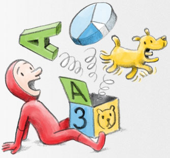
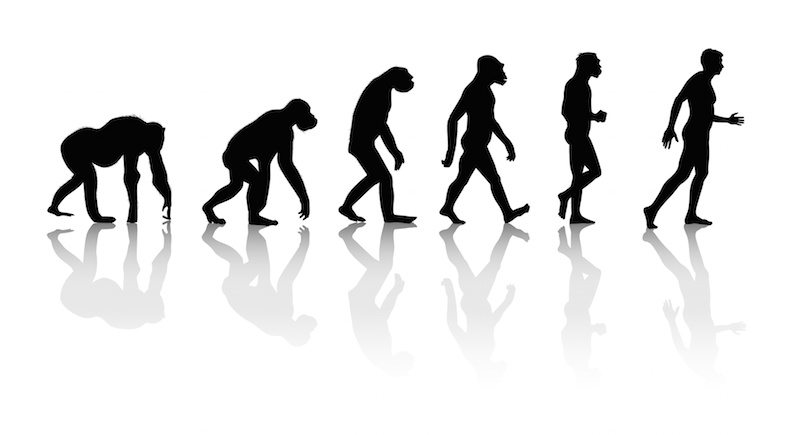

JavaScript ("JS" для краткости) — это полноценный
динамический язык программирования, который применяется к HTML документу, и может обеспечить
динамическую интерактивность на веб-сайтах. Его разработал Brendan Eich, сооснователь проекта
Mozilla, Mozilla Foundation и Mozilla Corporation.
| 1 | 2 | 3 | 4 |
|  | 12 | Java | |
| *** | | | |
| @ | 8 мес. | ||
| /// |  | |
| && | HTML | ||
| JS | Tree | ? | |
| what |